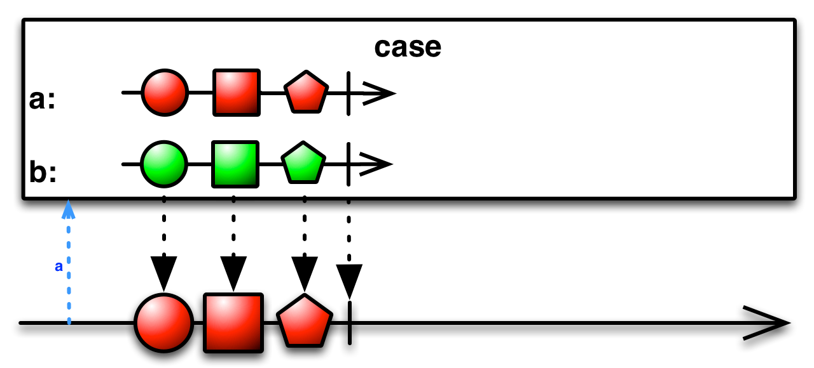
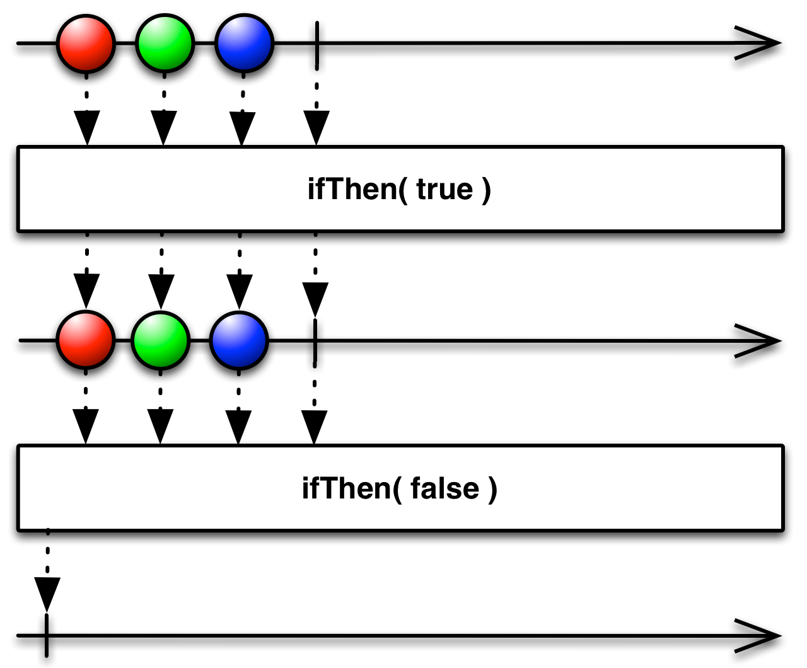
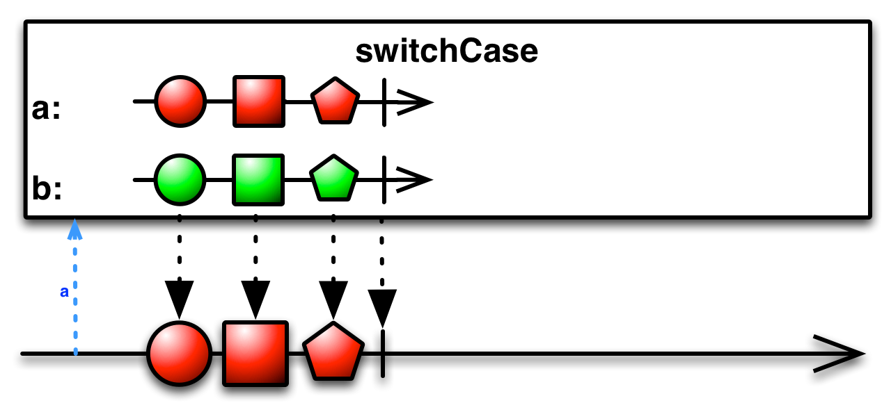

Under construction...
Case¶
-
classmethod
Observable.case(selector, sources, default_source=None, scheduler=None)¶ Uses selector to determine which source in sources to use. There is an alias ‘switch_case’.
Example: 1 - res = rx.Observable.case(selector, { ‘1’: obs1, ‘2’: obs2 }) 2 - res = rx.Observable.case(selector, { ‘1’: obs1, ‘2’: obs2 }, obs0) 3 - res = rx.Observable.case(selector, { ‘1’: obs1, ‘2’: obs2 },
scheduler=scheduler)Keyword arguments: :param types.FunctionType selector: The function which extracts the value
for to test in a case statement.
Parameters: - sources (list) – A object which has keys which correspond to the case statement labels.
- default_source (Observable) – The observable sequence or Promise that will be run if the sources are not matched. If this is not provided, it defaults to rx.Observabe.empty with the specified scheduler.
Returns: An observable sequence which is determined by a case statement.
Return type: Observable
-
classmethod
Observable.defer(observable_factory)¶ Returns an observable sequence that invokes the specified factory function whenever a new observer subscribes.
Example: 1 - res = rx.Observable.defer(lambda: rx.Observable.from_([1,2,3]))
Keyword arguments: :param types.FunctionType observable_factory: Observable factory function
to invoke for each observer that subscribes to the resulting sequence.Returns: An observable sequence whose observers trigger an invocation of the given observable factory function. :rtype: Observable

-
classmethod
Observable.if_then(condition, then_source, else_source=None, scheduler=None)¶ Determines whether an observable collection contains values.
Example: 1 - res = rx.Observable.if(condition, obs1) 2 - res = rx.Observable.if(condition, obs1, obs2) 3 - res = rx.Observable.if(condition, obs1, scheduler=scheduler)
Keyword parameters: condition – {Function} The condition which determines if the
then_source or else_source will be run.- then_source – {Observable} The observable sequence or Promise that
- will be run if the condition function returns true.
- else_source – {Observable} [Optional] The observable sequence or
- Promise that will be run if the condition function returns False. If this is not provided, it defaults to rx.Observable.empty
scheduler – [Optional] Scheduler to use.
Returns an observable {Observable} sequence which is either the then_source or else_source.

-
classmethod
Observable.switch_case(selector, sources, default_source=None, scheduler=None)¶ Uses selector to determine which source in sources to use. There is an alias ‘switch_case’.
Example: 1 - res = rx.Observable.case(selector, { ‘1’: obs1, ‘2’: obs2 }) 2 - res = rx.Observable.case(selector, { ‘1’: obs1, ‘2’: obs2 }, obs0) 3 - res = rx.Observable.case(selector, { ‘1’: obs1, ‘2’: obs2 },
scheduler=scheduler)Keyword arguments: :param types.FunctionType selector: The function which extracts the value
for to test in a case statement.
Parameters: - sources (list) – A object which has keys which correspond to the case statement labels.
- default_source (Observable) – The observable sequence or Promise that will be run if the sources are not matched. If this is not provided, it defaults to rx.Observabe.empty with the specified scheduler.
Returns: An observable sequence which is determined by a case statement.
Return type: Observable